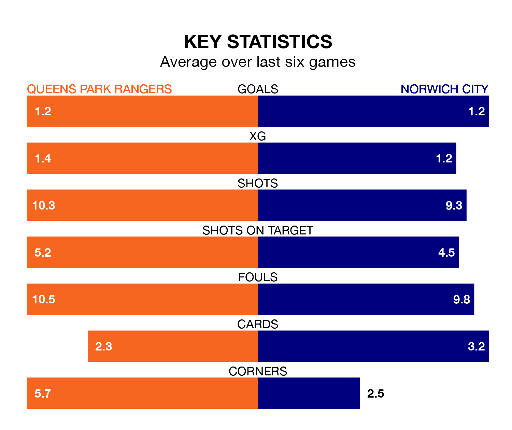

Struggling Queens Park Rangers face Norwich City at Loftus Road on Saturday looking to build on a win in their last league outing.
After securing all three points with a 2-1 victory over Blackburn Rovers on February 3, QPR sit 22nd in EFL Championship.
They travel to play a Norwich side ninth in the standings, who also won their last match, 2-1 against Coventry City.
With 27 goals in 30 games so far this season, QPR are the league's third-lowest scorers with 0.9 goals per game. And they are conceding at an average rate, letting in 41 goals at a rate of 1.4 per game.
Norwich, meanwhile, are above average scorers, with 1.6 goals per game, compared to a league average of 1.4. They have conceded 1.5 goals per game.
In the last 10 years, QPR and Norwich have played each other on 12 occasions. QPR won two of them, Norwich seven, and they drew three times.
On average, QPR scored 0.8 goals and the Canaries 1.7 in those matches.
Their last meeting was on November 25, when Norwich won 1-0 at home.
In Jon Rowe, City have one of the league's sharpest shooters so far this season. He has notched 12 goals in 27 appearances, to sit fifth in the scoring charts.
Rangers's top scorers, with four goals each, are Lyndon Dykes and Kenneth Paal.
The home side are in mixed form in EFL Championship, with two wins and two draws from their last six games.
With three wins and a draw over that period, the Canaries' form is slightly better – they have taken 10 points from 18, compared to QPR's eight.
Updated: 14:59 (UTC), 05/02/24